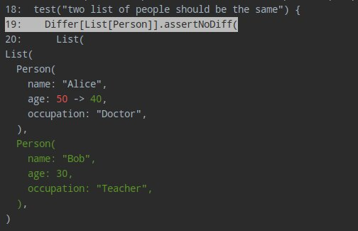

Quickstart
Let’s see how you can use Difflicious in your MUnit tests
First, add the following dependency in your SBT configuration:
"com.github.jatcwang" %% "difflicious-munit" % "0.3.0-M1" % Test
If you are running tests using IntelliJ IDEA’s test runner, you will want to turn off the red text coloring it uses for test failure outputs because it interferes with difflicious’ color outputs.
In File | Settings | Editor | Color Scheme | Console Colors | Console | Error Output, uncheck the red foreground color.
Let’s say you have some case classes..
case class Person(
name: String,
age: Int,
occupation: String
)
To perform diffs with Difflicious, you will need to derive some Differs
import munit.FunSuite
import difflicious.Differ
import difflicious.munit.MUnitDiff._
class ExampleTest extends FunSuite {
// Derive Differs for case class and sealed traits
implicit val personDiffer: Differ[Person] = Differ.derived[Person]
test("two list of people should be the same") {
Differ[List[Person]].assertNoDiff(
List(
Person("Alice", 50, "Doctor")
),
List(
Person("Alice", 40, "Doctor"),
Person("Bob", 30, "Teacher")
)
)
}
}
Run the tests, and you should see a nice failure diff:

Pretty right? You should explore the next sections of the documentation and learn about the different Differs and how you can configure them!